UI Components¶
User interface and annotation classes. All inherit from VCollection
(unless noted) and support the full set of animation methods.
Title¶
- class Title(text, creation=0, z=0, **kwargs)
Centered title text at the top of the canvas with an underline. Passes extra keyword arguments through to
Text(e.g.font_size,fill).- Parameters:
text (str) – Title string.
Example: Title
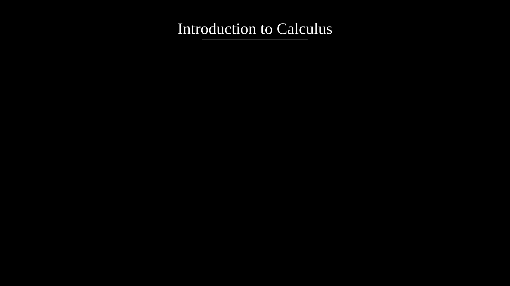
"""Title with underline.""" from vectormation.objects import * v = VectorMathAnim() v.set_background() title = Title('Introduction to Calculus') v.add(title) v.show(end=0)
Variable¶
- class Variable(label='x', value=0, fmt='{:.2f}', x=960, y=540, font_size=48, creation=0, z=0, **styling)
Display a variable label with an animated numeric value (e.g.
x = 3.14).- Parameters:
label (str) – Variable name.
value (float) – Initial numeric value.
fmt (str) – Format string for the displayed number.
- tracker: Real
The underlying
DecimalNumbertracker.
- set_value(val, start=0)
Set the displayed value from start onward.
- animate_value(target, start, end, easing=smooth)
Animate the value to target over
[start, end].
Example: Variable
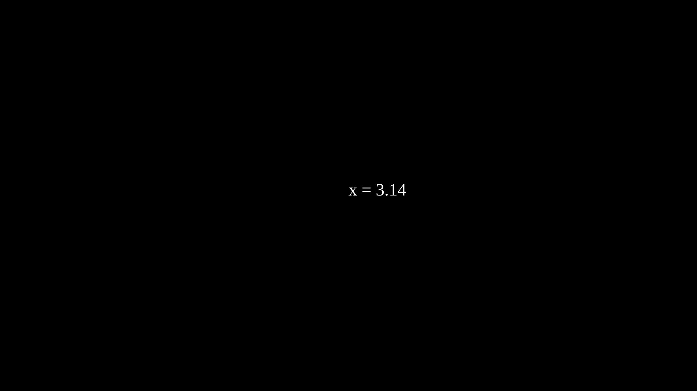
"""Variable display with numeric value.""" from vectormation.objects import * v = VectorMathAnim() v.set_background() var = Variable(label='x', value=3.14, font_size=48) v.add(var) v.show(end=0)
Underline¶
- class Underline(target, buff=4, follow=True, creation=0, z=0, **styling)¶
Underline beneath a target object. Tracks the target’s bounding box if
follow=True.- Parameters:
target (VObject) – Object to underline.
buff (float) – Gap below the target.
follow (bool) – Dynamically follow the target.
Example: Underline
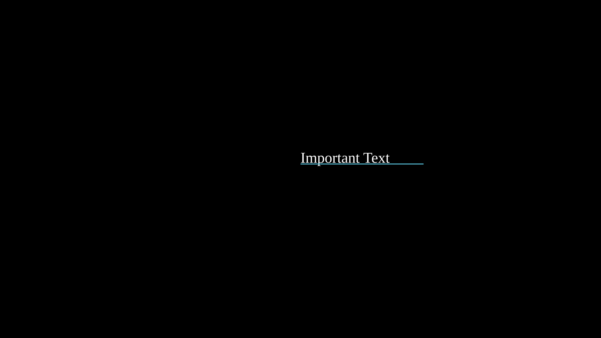
"""Underline beneath a text object.""" from vectormation.objects import * v = VectorMathAnim() v.set_background() txt = Text(text='Important Text', x=960, y=520, font_size=48, fill='#fff', stroke_width=0) ul = Underline(txt, buff=4, stroke='#58C4DD', stroke_width=3) v.add(txt, ul) v.show(end=0)
Code¶
- class Code(text, language='python', x=120, y=120, font_size=24, line_height=1.5, tab_width=4, creation=0, z=0, **styling)
Syntax-highlighted code block with line numbers and a dark background. Supports Python, JavaScript, C, Java, Rust, and Go keyword highlighting.
- Parameters:
text (str) – Source code string.
language (str) – Programming language for keyword coloring.
line_height (float) – Multiplier for vertical spacing.
- highlight_lines(line_nums, start=0, end=1, color='#FFFF00', opacity=0.2, easing=there_and_back)
Highlight specific lines with a colored overlay. Returns a
VCollectionof overlay rectangles.
- reveal_lines(start=0, end=1, overlap=0.5)
Reveal code lines sequentially with staggered fade-in.
Example: Code
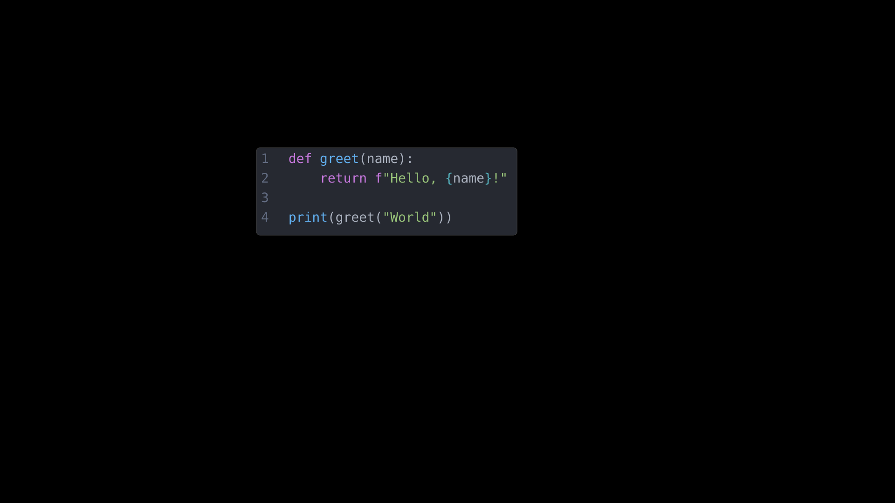
"""Code block with syntax highlighting.""" from vectormation.objects import * v = VectorMathAnim() v.set_background() code = Code('''def greet(name): return f"Hello, {name}!" print(greet("World"))''', language='python', x=560, y=350, font_size=28) v.add(code) v.show(end=0)
Label¶
- class Label(text, x=960, y=540, font_size=36, padding=10, corner_radius=4, creation=0, z=0, **styling)
Text label with a surrounding rounded-rectangle background.
- Parameters:
text (str) – Label content.
padding (float) – Padding around the text.
Example: Label
"""Label with rounded background.""" from vectormation.objects import * v = VectorMathAnim() v.set_background() label = Label('Hello World', x=960, y=540, font_size=36, padding=14) v.add(label) v.show(end=0)
LabeledLine¶
- class LabeledLine(x1=860, y1=540, x2=1060, y2=540, label='', font_size=24, label_buff=10, creation=0, z=0, **styling)¶
Line with a text label placed at its midpoint, offset perpendicular to the line direction.
- Parameters:
label (str) – Midpoint label text.
label_buff (float) – Perpendicular offset distance.
Example: LabeledLine
"""LabeledLine with midpoint text.""" from vectormation.objects import * v = VectorMathAnim() v.set_background() ll = LabeledLine(x1=660, y1=540, x2=1260, y2=540, label='600 px', stroke='#58C4DD') v.add(ll) v.show(end=0)
LabeledArrow¶
- class LabeledArrow(x1=860, y1=540, x2=1060, y2=540, label='', font_size=24, label_buff=10, creation=0, z=0, **styling)¶
Arrow with a text label placed at its midpoint.
- Parameters:
label (str) – Midpoint label text.
label_buff (float) – Perpendicular offset distance.
Example: LabeledArrow
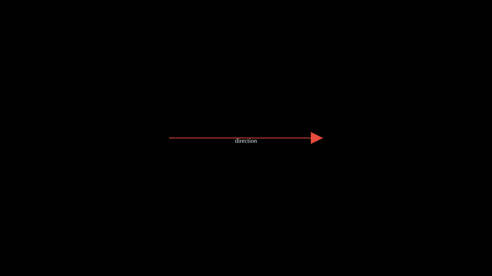
"""LabeledArrow with midpoint text.""" from vectormation.objects import * v = VectorMathAnim() v.set_background() la = LabeledArrow(x1=660, y1=540, x2=1260, y2=540, label='direction', stroke='#E74C3C') v.add(la) v.show(end=0)
Callout¶
- class Callout(text, target, direction='up', distance=80, font_size=24, padding=8, corner_radius=4, creation=0, z=0, **styling)
Text callout with a pointer line to a target position.
- Parameters:
text (str) – Callout message.
target – A VObject (uses its center) or an
(x, y)tuple.direction (str) –
'up','down','left', or'right'.distance (float) – Distance from the target to the callout box.
Example: Callout
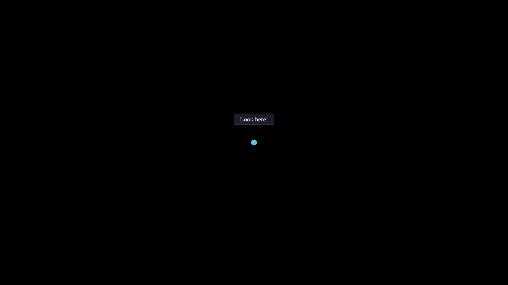
"""Callout pointing to a target position.""" from vectormation.objects import * v = VectorMathAnim() v.set_background() dot = Dot(cx=960, cy=540, fill='#58C4DD') callout = Callout('Look here!', target=(960, 540), direction='up', distance=80) v.add(dot, callout) v.show(end=0)
DimensionLine¶
- class DimensionLine(p1, p2, label=None, offset=30, font_size=20, tick_size=10, creation=0, z=0, **styling)
Technical dimension line between two points with extension lines, tick marks, and a measurement label.
- Parameters:
p1 (tuple) – Start point
(x, y).p2 (tuple) – End point
(x, y).label (str) – Measurement text (auto-computed from distance if
None).offset (float) – Perpendicular offset from the measured line.
Example: DimensionLine
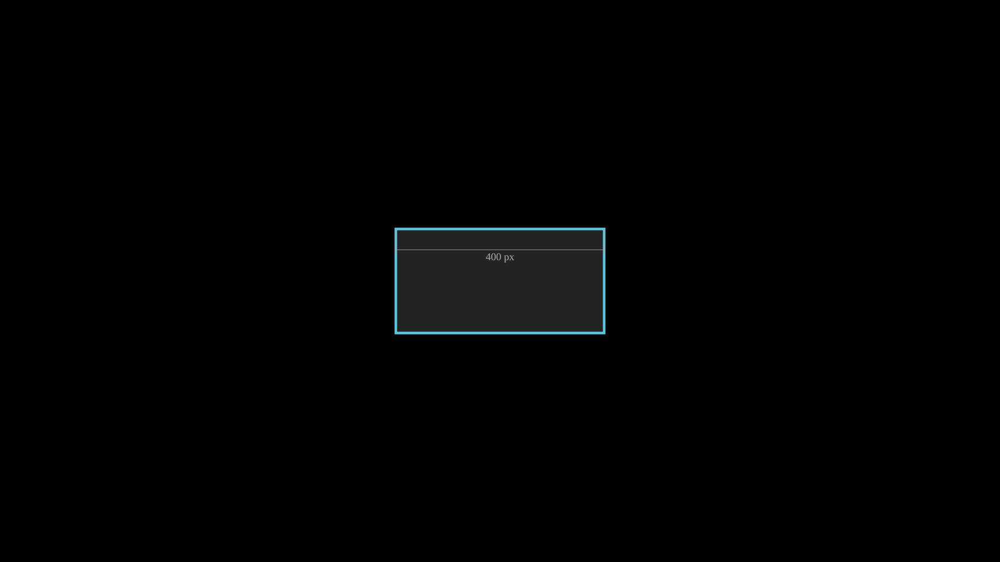
"""DimensionLine between two points.""" from vectormation.objects import * v = VectorMathAnim() v.set_background() rect = Rectangle(400, 200, x=760, y=440, fill='#333', stroke='#58C4DD') dim = DimensionLine(p1=(760, 440), p2=(1160, 440), label='400 px', offset=40) v.add(rect, dim) v.show(end=0)
Tooltip¶
- class Tooltip(text, target, start=0, duration=1.5, font_size=18, padding=6, creation=0, z=10, **styling)
Small tooltip that automatically fades in, holds, and fades out near a target object.
- Parameters:
text (str) – Tooltip message.
target – A VObject or
(x, y)tuple.start (float) – Time to begin the tooltip.
duration (float) – Total visible duration (fade-in + hold + fade-out).
Example: Tooltip
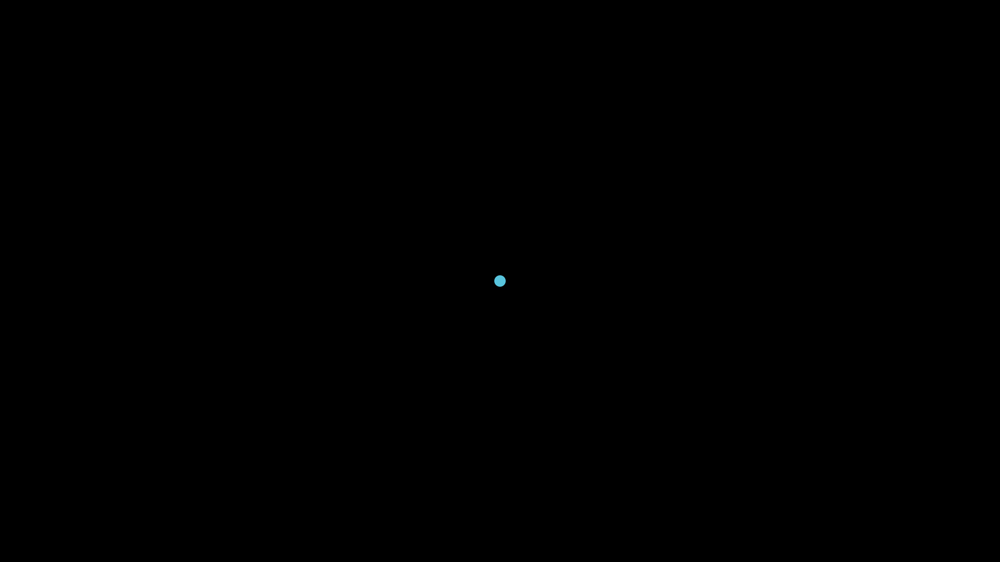
"""Tooltip near a target object.""" from vectormation.objects import * v = VectorMathAnim() v.set_background() dot = Dot(cx=960, cy=540, fill='#58C4DD') tip = Tooltip('Hover info', target=(960, 540), start=0, duration=2) v.add(dot, tip) v.show(end=0)
TextBox¶
- class TextBox(text, x=100, y=100, font_size=20, padding=12, width=None, height=None, corner_radius=6, box_fill='#333', box_opacity=0.9, text_color='#fff', creation=0, z=0, **styling)¶
Text with a surrounding rounded rectangle. Auto-sizes from the text length if width/height are
None.- Parameters:
text (str) – Displayed text.
box_fill (str) – Background color.
text_color (str) – Text fill color.
Example: TextBox
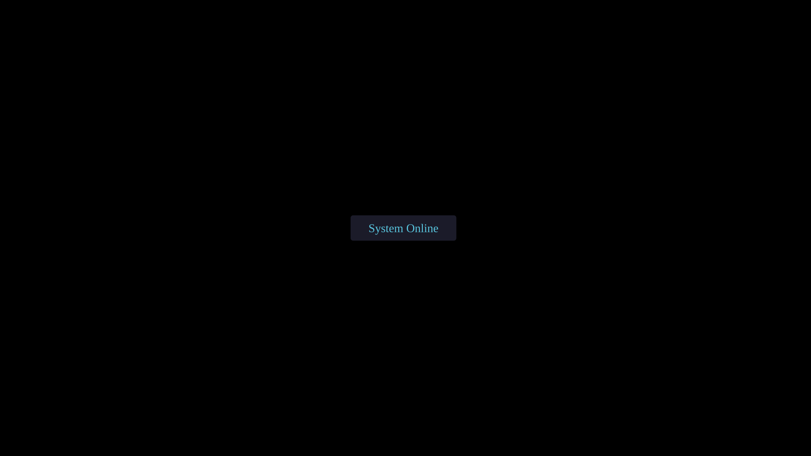
"""TextBox with dark background.""" from vectormation.objects import * v = VectorMathAnim() v.set_background() tb = TextBox('System Online', x=830, y=510, font_size=28, padding=16, box_fill='#1e1e2e', text_color='#58C4DD') v.add(tb) v.show(end=0)
Bracket¶
- class Bracket(x=100, y=100, width=100, height=20, direction='down', stroke='#fff', stroke_width=2, text='', font_size=16, text_color='#aaa', creation=0, z=0)¶
Square bracket decoration pointing at a range, with an optional text label.
- Parameters:
direction (str) –
'down','up','left', or'right'.text (str) – Label placed outside the bracket.
Example: Bracket
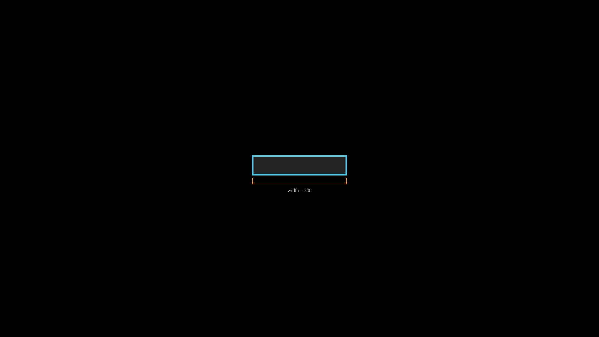
"""Bracket decoration with label.""" from vectormation.objects import * v = VectorMathAnim() v.set_background() rect = Rectangle(300, 60, x=810, y=500, fill='#333', stroke='#58C4DD') bracket = Bracket(x=810, y=570, width=300, height=20, direction='down', stroke='#F39C12', text='width = 300') v.add(rect, bracket) v.show(end=0)
IconGrid¶
- class IconGrid(data, x=100, y=100, cols=10, size=15, gap=3, shape='circle', creation=0, z=0)¶
Grid of colored shapes for infographic-style visualizations.
- Parameters:
data (list) – List of
(count, color)tuples.cols (int) – Number of columns.
shape (str) –
'circle'or'square'.
Example: IconGrid
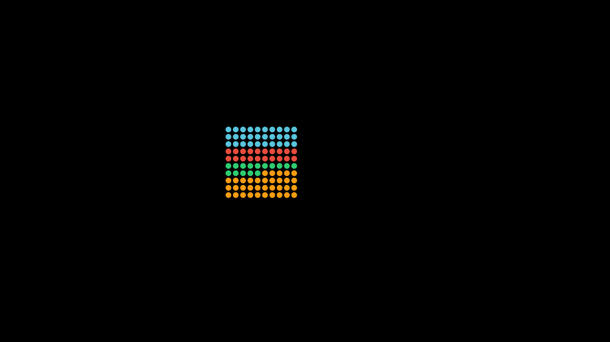
"""IconGrid infographic display.""" from vectormation.objects import * v = VectorMathAnim() v.set_background() grid = IconGrid( data=[(30, '#58C4DD'), (20, '#E74C3C'), (15, '#2ECC71'), (35, '#F39C12')], x=710, y=400, cols=10, size=18, gap=5, ) v.add(grid) v.show(end=0)
SpeechBubble¶
- class SpeechBubble(text='', x=100, y=100, font_size=20, padding=14, width=None, height=None, corner_radius=10, box_fill='#1e1e2e', box_opacity=0.95, text_color='#fff', tail_direction='down', tail_width=20, tail_height=18, creation=0, z=0, **styling)¶
Rounded rectangle with a triangular tail, useful for dialogue and annotations.
- Parameters:
text (str) – Bubble content.
tail_direction (str) –
'down','up','left', or'right'.tail_width (float) – Width of the triangular tail.
tail_height (float) – Height of the triangular tail.
Example: SpeechBubble
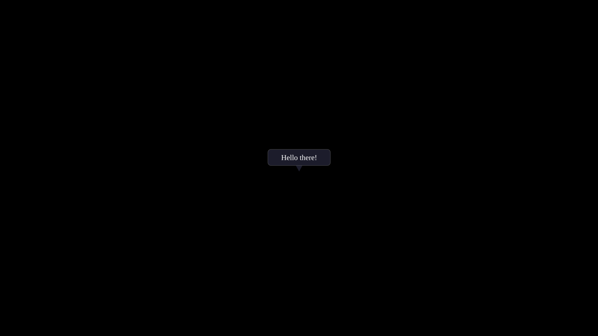
"""SpeechBubble with tail.""" from vectormation.objects import * v = VectorMathAnim() v.set_background() bubble = SpeechBubble(text='Hello there!', x=860, y=480, font_size=24, tail_direction='down', box_fill='#1e1e2e', text_color='#fff') v.add(bubble) v.show(end=0)
Badge¶
- class Badge(text='Label', x=100, y=100, font_size=16, padding_x=14, padding_y=6, bg_color='#58C4DD', text_color='#000', creation=0, z=0, **styling)¶
Pill-shaped label with fully rounded corners, similar to GitHub badges.
- Parameters:
text (str) – Badge text.
bg_color (str) – Background fill color.
Example: Badge
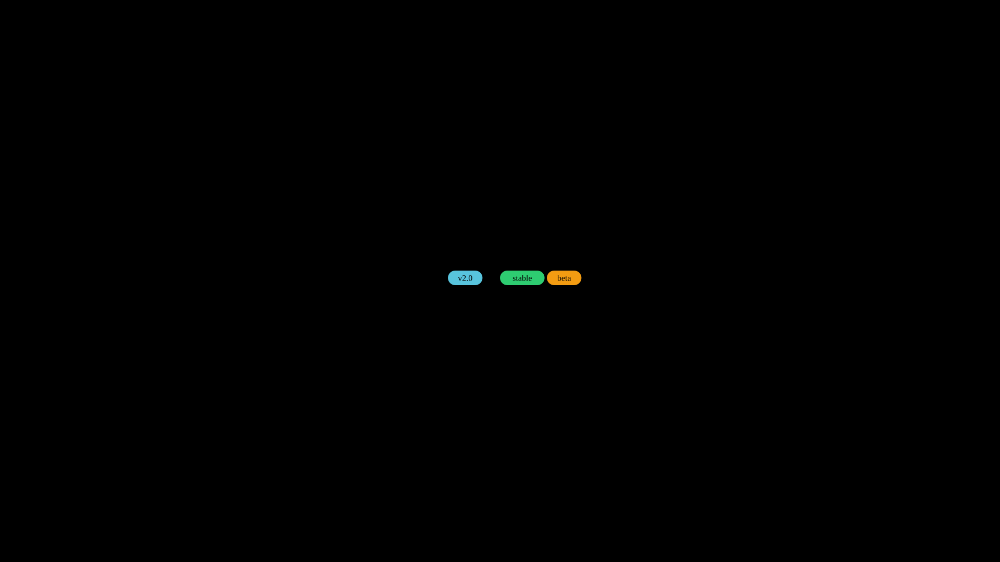
"""Badge pill-shaped label.""" from vectormation.objects import * v = VectorMathAnim() v.set_background() b1 = Badge(text='v2.0', x=860, y=520, bg_color='#58C4DD', text_color='#000') b2 = Badge(text='stable', x=960, y=520, bg_color='#2ECC71', text_color='#000') b3 = Badge(text='beta', x=1050, y=520, bg_color='#F39C12', text_color='#000') v.add(b1, b2, b3) v.show(end=0)
Divider¶
- class Divider(x=100, y=300, length=400, direction='horizontal', label=None, font_size=16, gap=12, creation=0, z=0, **styling)¶
Horizontal or vertical line with an optional centered text label. When a label is provided, the line splits into two segments with the label in between.
- Parameters:
direction (str) –
'horizontal'or'vertical'.label (str) – Optional centered label text.
Example: Divider
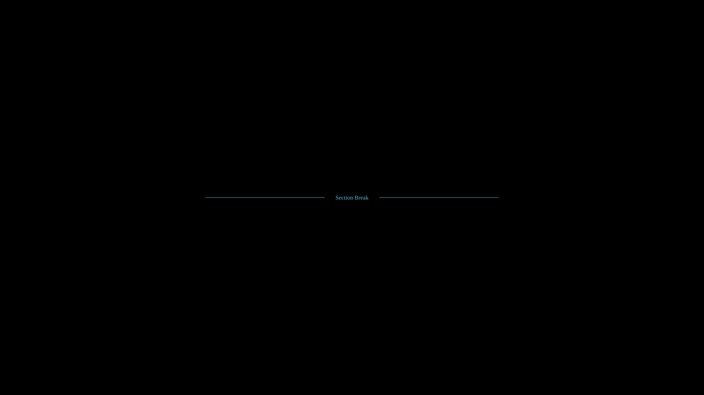
"""Divider with centered label.""" from vectormation.objects import * v = VectorMathAnim() v.set_background() div = Divider(x=560, y=540, length=800, direction='horizontal', label='Section Break', stroke='#58C4DD') v.add(div) v.show(end=0)
Checklist¶
- class Checklist(*items, x=100, y=100, font_size=24, spacing=1.6, box_size=None, check_color='#83C167', uncheck_color='#555', text_color='#fff', creation=0, z=0)¶
List of items with checkbox indicators. Each item is either a plain string (unchecked) or a
(text, checked)tuple.- Parameters:
items – Strings or
(text, bool)tuples.
- check_item(index, start=0, end=0.3)¶
Animate checking the item at index.
- reveal_items(start=0, end=1, overlap=0.5)¶
Cascade items into view sequentially.
Example: Checklist
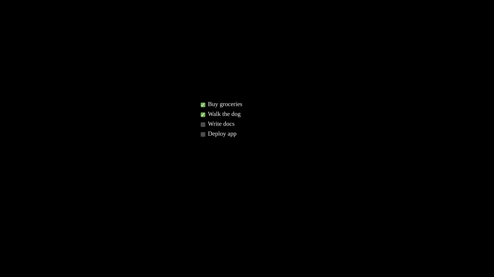
"""Checklist with checked and unchecked items.""" from vectormation.objects import * v = VectorMathAnim() v.set_background() cl = Checklist( ('Buy groceries', True), ('Walk the dog', True), 'Write docs', 'Deploy app', x=780, y=400, ) v.add(cl) v.show(end=0)
Stepper¶
- class Stepper(steps, x=100, y=300, spacing=150, radius=20, active=0, direction='horizontal', font_size=16, active_color='#58C4DD', inactive_color='#555', text_color='#fff', creation=0, z=0)¶
Step indicator: numbered circles connected by lines, with active step highlighting. steps can be an
int(auto-numbered) or a list of label strings.- Parameters:
steps – Number of steps or list of label strings.
active (int) – Initially active step index.
direction (str) –
'horizontal'or'vertical'.
- advance(from_step, to_step, start=0, end=0.5)¶
Animate transitioning the active highlight from one step to another.
Example: Stepper
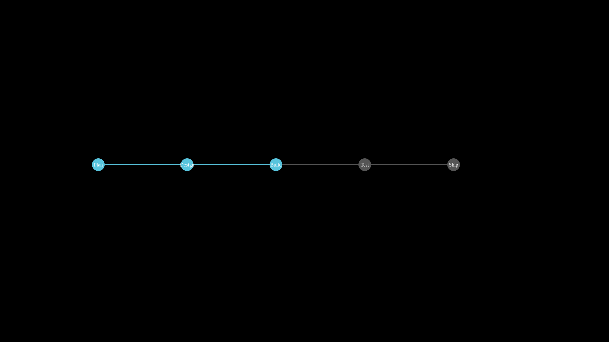
"""Stepper progress indicator.""" from vectormation.objects import * v = VectorMathAnim() v.set_background() stepper = Stepper( steps=['Plan', 'Design', 'Build', 'Test', 'Ship'], x=310, y=520, spacing=280, active=2, active_color='#58C4DD', ) v.add(stepper) v.show(end=0)
TagCloud¶
- class TagCloud(data, x=100, y=100, width=500, min_font=14, max_font=48, colors=None, creation=0, z=0)¶
Word/tag cloud with font sizes proportional to weights.
- Parameters:
data (list) – List of
(text, weight)tuples.min_font (float) – Minimum font size.
max_font (float) – Maximum font size.
Example: TagCloud
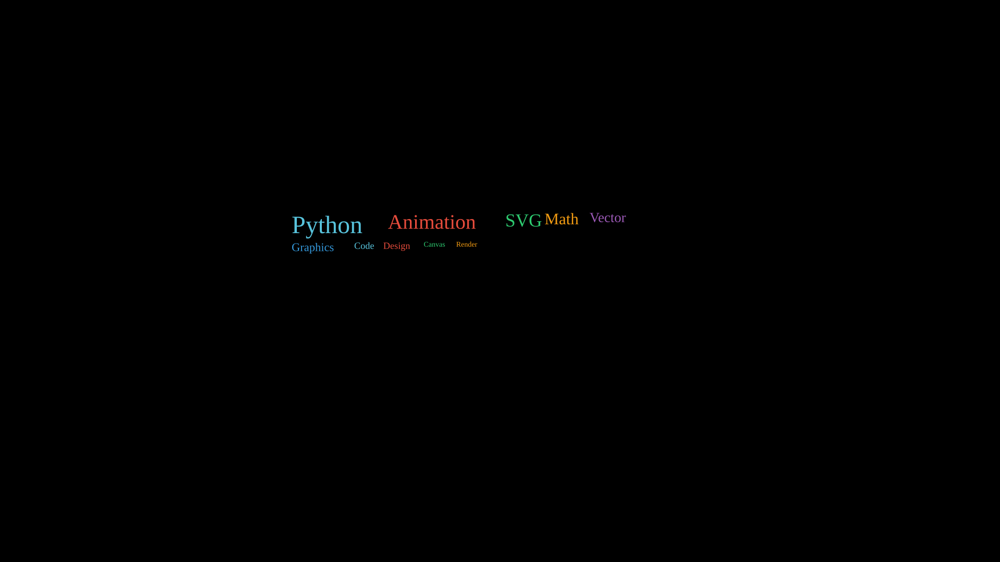
"""TagCloud with weighted words.""" from vectormation.objects import * v = VectorMathAnim() v.set_background() cloud = TagCloud( data=[ ('Python', 10), ('Animation', 8), ('SVG', 7), ('Math', 6), ('Vector', 5), ('Graphics', 4), ('Code', 3), ('Design', 3), ('Canvas', 2), ('Render', 2), ], x=560, y=400, width=800, colors=['#58C4DD', '#E74C3C', '#2ECC71', '#F39C12', '#9B59B6', '#3498DB'], ) v.add(cloud) v.show(end=0)
StatusIndicator¶
- class StatusIndicator(label, status='online', x=100, y=100, font_size=18, dot_radius=6, gap=10, creation=0, z=0)¶
Colored dot with a text label, like a service status indicator.
- Parameters:
label (str) – Indicator label.
status (str) – One of
'online','offline','warning','pending','ok','error','success','fail','warn','unknown', or a raw hex color string.
Example: StatusIndicator
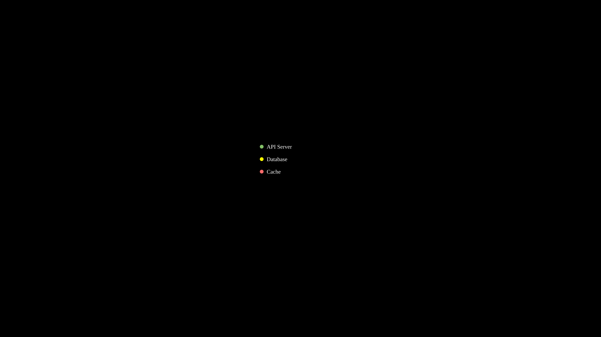
"""StatusIndicator with different states.""" from vectormation.objects import * v = VectorMathAnim() v.set_background() s1 = StatusIndicator('API Server', status='online', x=830, y=470) s2 = StatusIndicator('Database', status='warning', x=830, y=510) s3 = StatusIndicator('Cache', status='offline', x=830, y=550) v.add(s1, s2, s3) v.show(end=0)
Meter¶
- class Meter(value=0.5, x=100, y=100, width=30, height=150, direction='vertical', fill_color='#58C4DD', bg_color='#333', border_color='#888', creation=0, z=0)¶
Vertical or horizontal bar meter (battery level, VU meter, etc.).
- Parameters:
value (float) – Initial fill level (0–1).
direction (str) –
'vertical'or'horizontal'.
Example: Meter
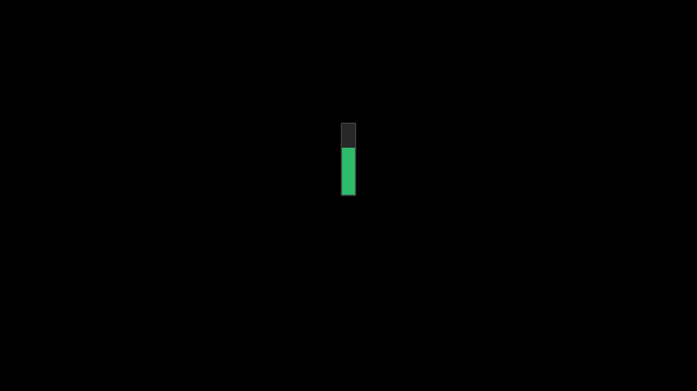
"""Meter bar (vertical fill level).""" from vectormation.objects import * v = VectorMathAnim() v.set_background() meter = Meter(value=0.65, x=940, y=340, width=40, height=200, direction='vertical', fill_color='#2ECC71') v.add(meter) v.show(end=0)
Countdown¶
- class Countdown(start_value=10, end_value=0, x=960, y=540, font_size=120, start=0, end=3, creation=0, z=0, **styling)¶
Animated countdown timer that updates the displayed number each frame.
- Parameters:
start_value (int) – Starting number.
end_value (int) – Ending number.
start (float) – Animation start time.
end (float) – Animation end time.
Example: Countdown
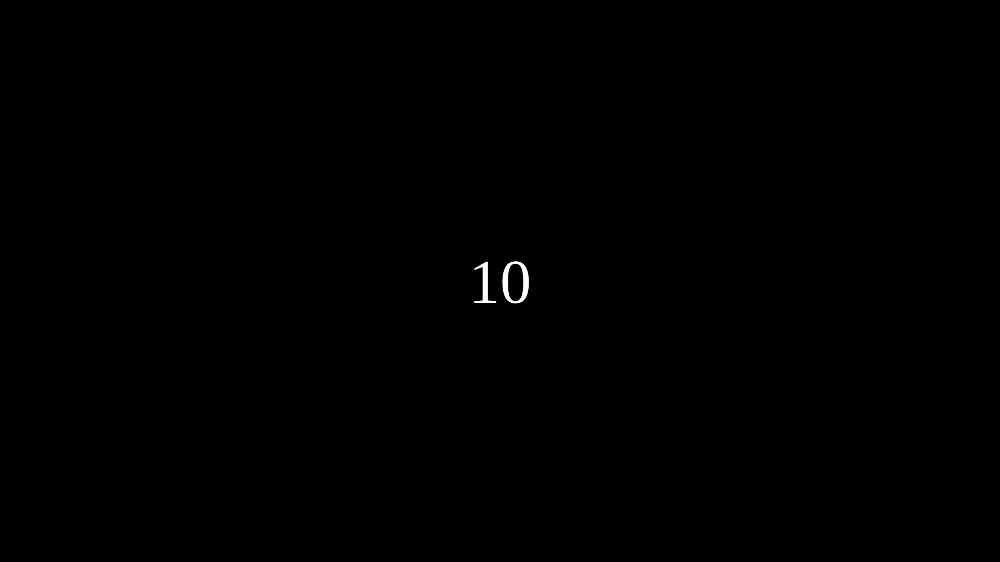
"""Countdown timer display.""" from vectormation.objects import * v = VectorMathAnim() v.set_background() cd = Countdown(start_value=10, end_value=0, font_size=120, start=0, end=3) v.add(cd) v.show(end=0)
Filmstrip¶
- class Filmstrip(labels, x=100, y=400, frame_width=200, frame_height=130, spacing=20, font_size=16, creation=0, z=0, **styling)¶
Horizontal row of labeled thumbnail boxes, like a storyboard.
- Parameters:
labels (list) – Label for each frame.
frame_width (float) – Width of each frame rectangle.
spacing (float) – Horizontal gap between frames.
- highlight_frame(index, start=0, end=1, color='#58C4DD', easing=there_and_back)¶
Flash-highlight a frame by index.
Example: Filmstrip
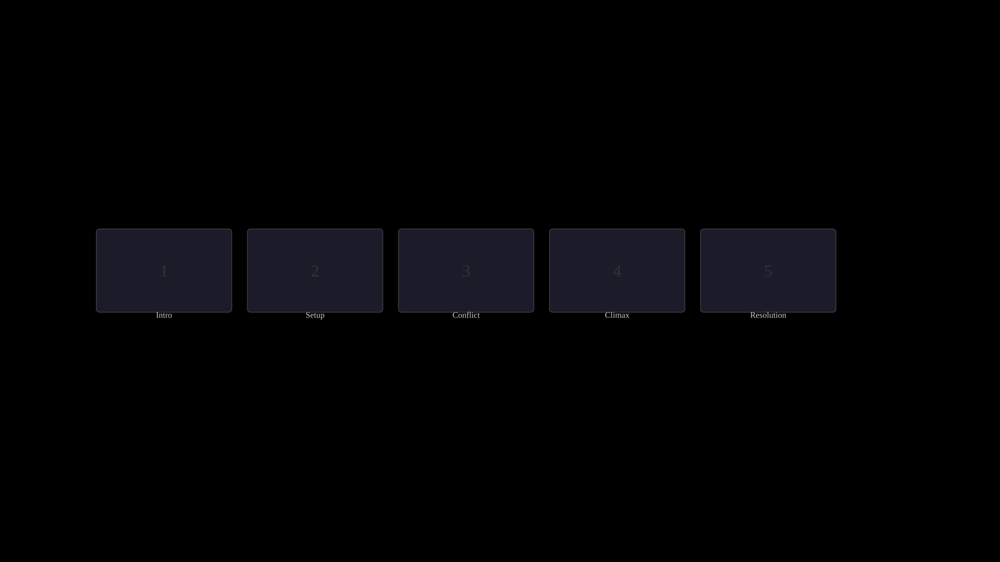
"""Filmstrip storyboard display.""" from vectormation.objects import * v = VectorMathAnim() v.set_background() strip = Filmstrip( labels=['Intro', 'Setup', 'Conflict', 'Climax', 'Resolution'], x=185, y=440, frame_width=260, frame_height=160, spacing=30, ) v.add(strip) v.show(end=0)